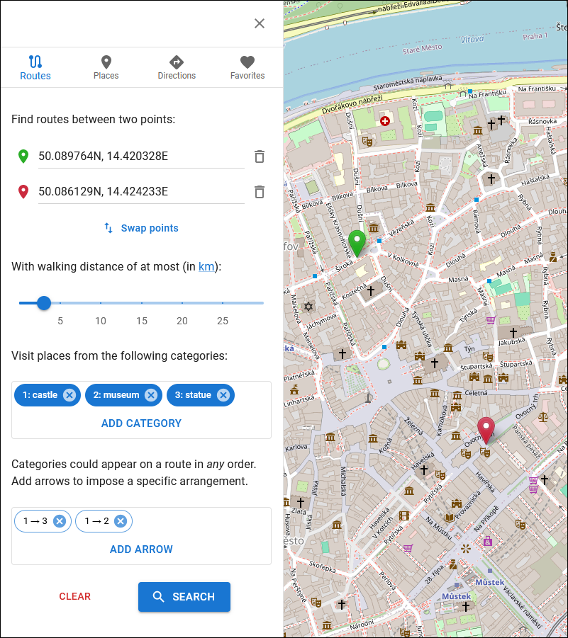
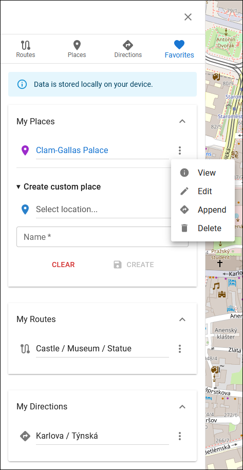

User's documentation
The application provides the same level of user experience on desktop and mobile devices.
Route search
Navigate to the panel for searching routes:
Add a starting point and destination either on the map or one of your Favorites:

Custom points added directly on the map (not one of the Favorites) are movable. Furthermore, you can clean up an occupied slot or swap points.
Add categories of places that should appear on any found route:

A category is composed of a keyword and keyword-specific attribute filters. The application will match only places associated with the keyword and that satisfy all activated attribute filters.
There are five possible types of attribute filters: existential (shown in the picture above), boolean, numeric, textual, and include/exclude.
To edit a category, click on its name. Press the x button to delete the category.
If necessary, order the categories using arrows:
Once all input parameters are set, press Search to initiate a request:

The result of a route search should have a structure similar to the one depicted below:

You may (un-)hide points associated with a category by toggling the corresponding checkbox.
If necessary, save the selected route with a custom name:
The route can be modified by copying its waypoints into the direction sequence.
Place search
To search for places, follow a similar procedure. Navigate to the Places panel, select a center point, adjust the circle's radius, and optionally add categories. If no category is specified, the system will attempt to retrieve all matching places within the circle.
The result of a place search is shown below.

Navigate to the detailed view of a place by clicking the blue link.

A place can be stored with a custom name or appended to the current direction sequence. Use the menu accessible via the three-dot button.
Direction search
Directions are searched in the same manner as the previous two types of entities. Add at least two points to the sequence and press Search.
After receiving a response from the backend, paginated results are displayed in the panel.

Favorites
All stored entities (routes, places, and directions) appear in the Favorites panel. Basic operations, such as view, edit, append (or modify), and delete, are available from the drop-down menu.

Create a custom place (home, work, etc.) with a name and location through the simple dialog in the My Places collapsible region.
Solid pod (advanced)
By default, personal data is stored locally on your device in IndexedDB, a standardized in-browser database. Additionally, the application supports decentralized Solid pods.
Solid enables you to regain true data ownership. Learn more about this technology at:
https://solidproject.org/about.
SmartWalk supports Inrupt PodSpaces out of the box, which is currently in Developer Preview. The application has also been tested on Community and Node Solid servers, yielding positive outcomes.
(!) The application assumes that your data is stored in the ${storage-root}/smartwalk/ container.
Create a profile and Solid pod at https://start.inrupt.com/profile.
Log in to a Solid server, grant the application access to your pod, and wait until the Solid Session panel is opened.

Now, the application is connected to the server. Select a Solid pod from the drop-down list and press the Activate Pod button. The application will initialize the pod, redirect to the Favorites panel, and download entities into the local state.
After that, you can use your Solid pod as if it were device storage.
To log out, press the Solid button in the upper right corner, and then click the Log Out button.